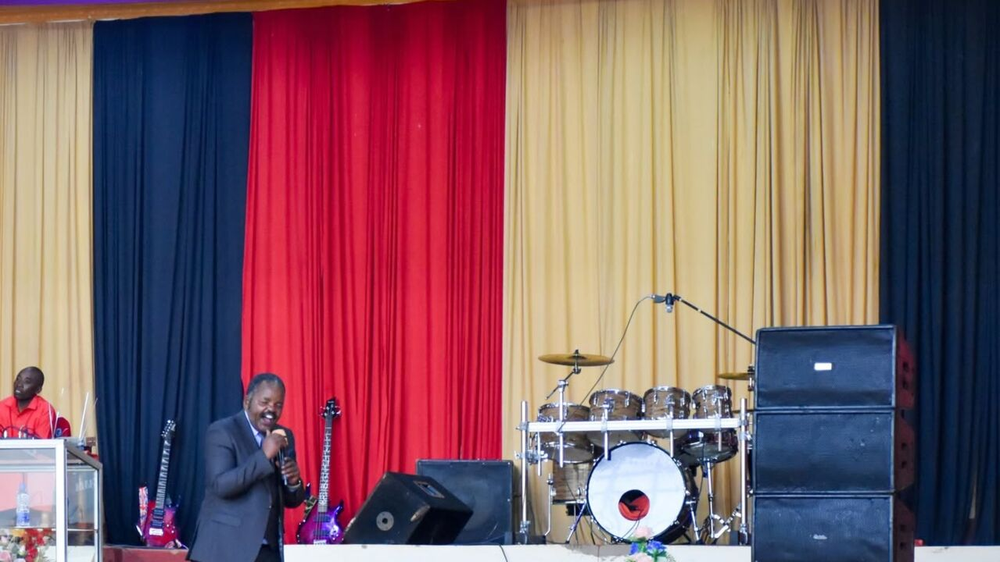
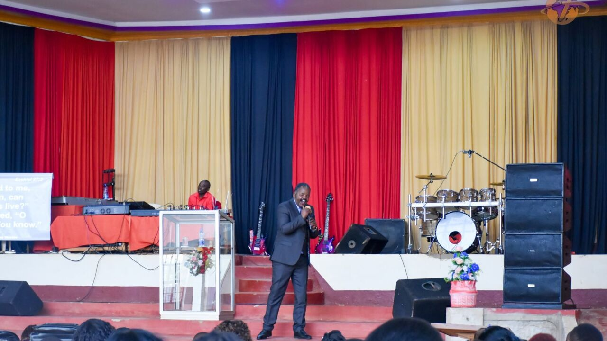
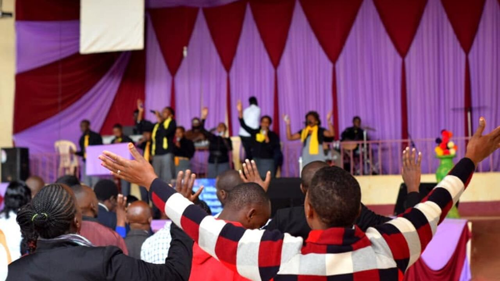
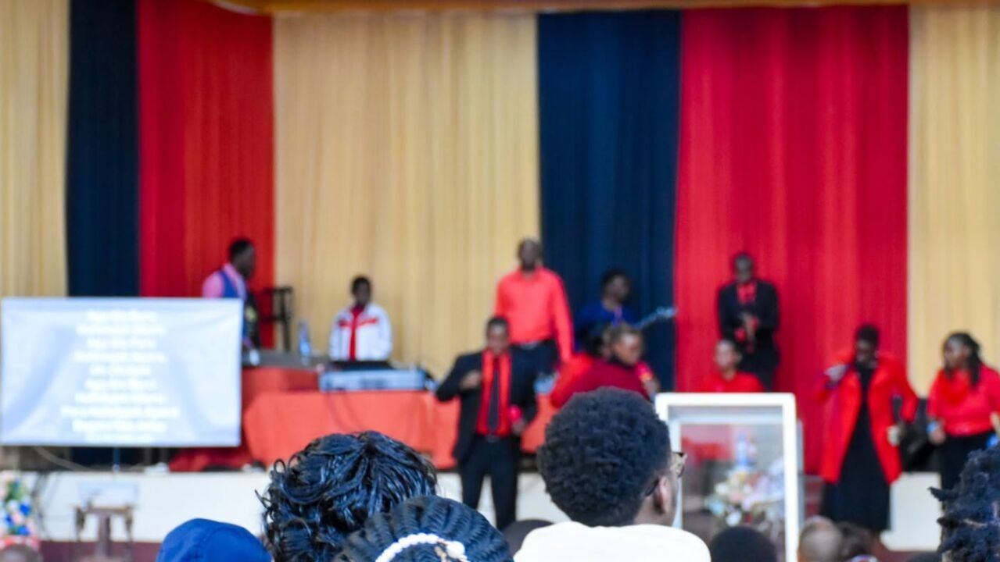
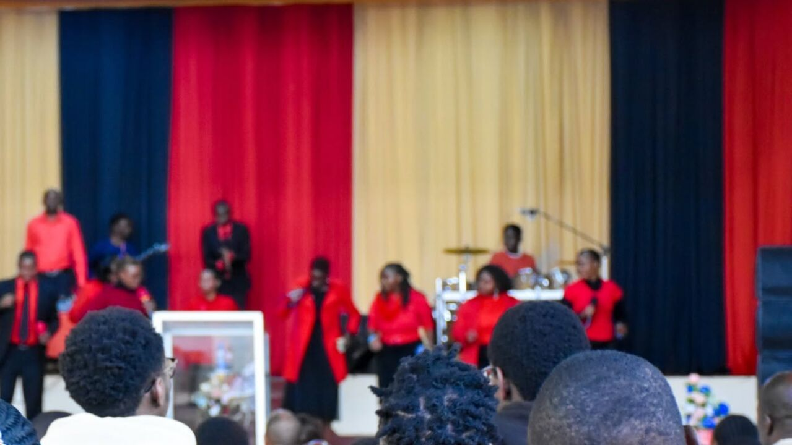

Sundays in Ngariama, Embu
For God. For People. For the City.
A Christ-centred church family worshipping together in Ngariama, Embu. Come as you are. You belong here.
Hover a picture, then step inside






Come as you are. There is a seat for you.
Bible hour
9:00 – 10:00 AM
Open the Word together before the main service.
Main service
10:00 AM – 1:00 PM
Worship in Swahili and English.
Our church family
Led by Bishop Dr David Mutweri and Rev. Margaret Mutweri
Perazim Mission Church is a Pentecostal and Evangelical church family in Ngariama, Embu. Meet the people behind the church.
Our storyGive with M-Pesa
Paybill 4069983. Account: Tithes or Giving. Your giving supports the work of the church in Embu and beyond.
How to give